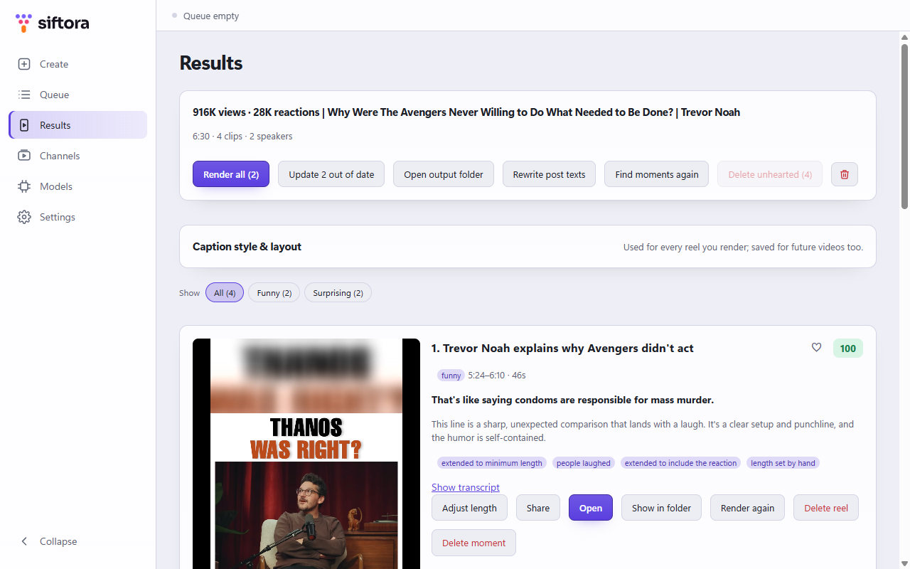
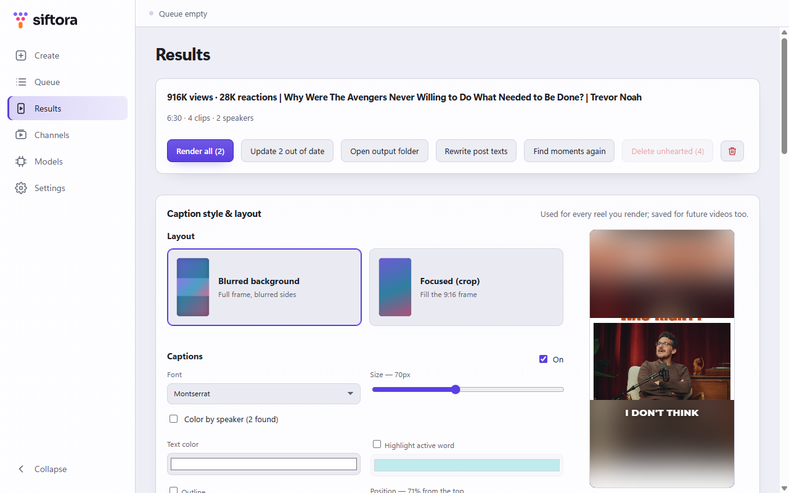
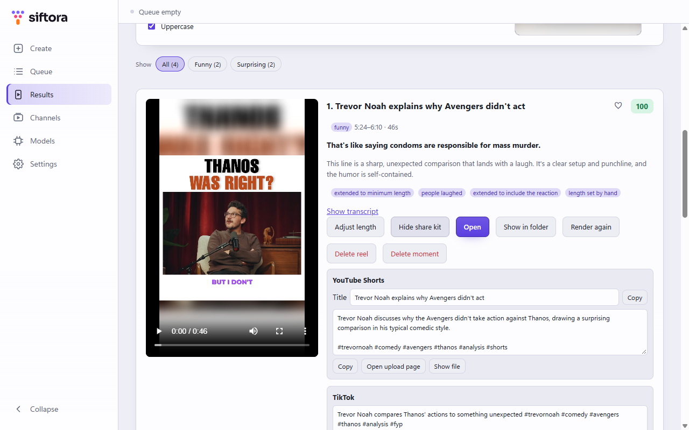
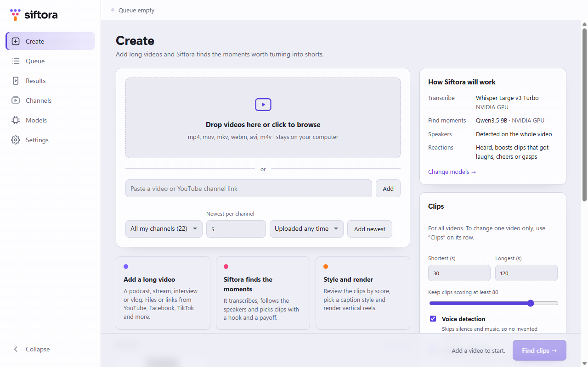
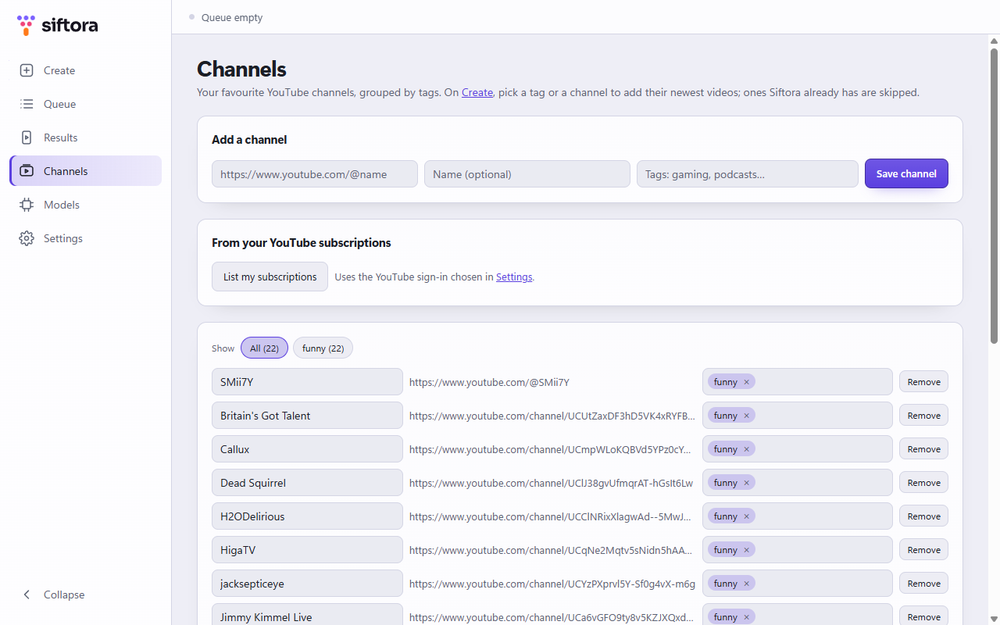

Sift your long videos for the moments worth sharing
Siftora turns podcasts, streams, interviews and vlogs into vertical clips for TikTok, Instagram Reels and YouTube Shorts, with animated captions. It is free and open source, runs on your own computer, and never uploads your videos.
For Windows 10 and 11, and macOS 13.3 or newer. On an Intel Mac, get the Intel version. Install help





From a two-hour video to ready-to-post reels
A local AI reads the whole transcript, picks the moments with a real payoff, and renders them as 1080×1920 reels.
Finds the moments
Each clip is scored and explained. It starts where the setup starts and quotes the payoff word for word, so nothing is cut off or invented.
Accurate captions
Word-by-word timing from Whisper, four caption fonts, an optional highlight on the spoken word and a colour per speaker.
Hears the room
Laughter, applause and YouTube's "Most replayed" graph push the moments viewers loved to the top.
Quick to fine-tune
Drag the clip's ends on a timeline, or click a word in the transcript to start or end on it.
Ready to post
Every reel comes with a title, description and hashtags per platform, with a credit to the original channel.
Files, links and channels
Use your own files, or links from YouTube, TikTok, X, Instagram and more. Save channels and add their newest videos in one click.
Private by design
No account, no tracking, no subscription. Siftora only goes online to download its engines and models, and the videos you add by link.
What you need
- Windows 10 or 11 (64-bit), or macOS 13.3 or newer
- 8 GB of RAM; 16 GB or more is better
- 3–12 GB of disk space for the AI models
- An NVIDIA graphics card makes it 5–10 times faster. Any computer works, more slowly.
Open source
- Free software under the GNU GPL v3
- Built on whisper.cpp, llama.cpp, FFmpeg, sherpa-onnx and yt-dlp
- Uses the models and tools you already have, such as Ollama and FFmpeg
- Source code, issues and changelog on GitHub